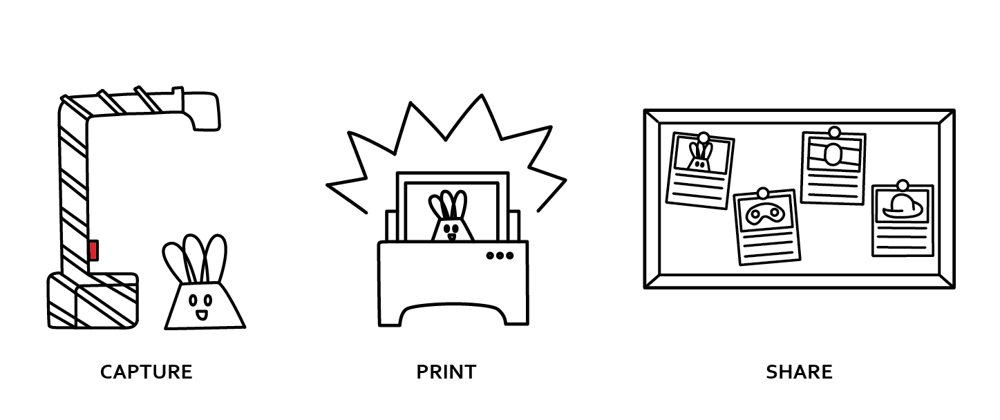

What is Pix?
Pix is a one-button documentation platform for capturing and printing photographs. It's built on Raspberry Pi and connects to a printer to create photos you can pin up and share.
Why does Pix exist?
Pix was created to help people communicate what they're working on in makerspaces in order to support community building and skillsharing.
The press-to-print interface, though, can be repurposed for many other creative applications. If you do something new with Pix, please share with #madewithpix.
How do I make Pix?
Click below for a full guide on building a Pix!
Build a Pix